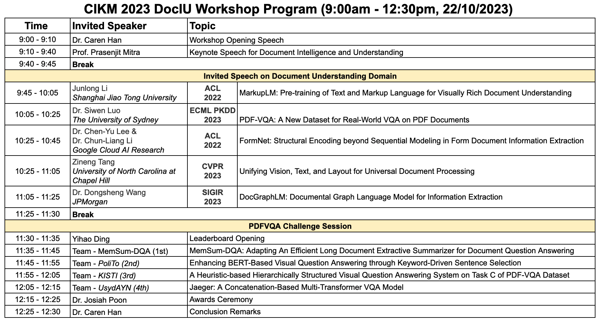

Workshop on Document Intelligence and Understanding (DocIU)
The first Workshop on Document Intelligence and Understanding (DocIU) will be held in conjunction with the 32nd ACM International Conference on Information and Knowledge Management (CIKM 2023) in Birmingham, UK.
- Workshop date & time: 22 October 2023 9:00AM - 12.30PM
- Workshop physical location : Alan Walters - 103
- Hybrid mode : Zoom Link
Overview

Document understanding and information extraction include different tasks to automatically understand a document and extract valuable information. Recently, there has been a rising demand for developing document understanding among different domains, including business, law and medicine, to boost the efficiency of work that is associated with a large number of documents. This workshop aims to bring together researchers in document understanding and image-text processing on diverse document types to boost the automatic document understanding techniques. The workshop consists of
- a series of invited talks by reputed members of the IR and NLP community on document intelligence and understanding from academia related to the topics below;
- a shared task with leaderboard challenges for ; and
- a presentation and ceremony for the leaderboard challenges.
Topics of interest include, but are not limited to:
- Document Information Retrieval
- Document Knowledge Management
- Document Layout Analysis
- Document Parsing
- Document Visual Question Answering
- Document Information Extraction
- Document Image Processing
- Document Analysis Systems
- Document Classification
- Document Representation Modelling
- Multimodal/Multimedia Document Analysis
- Historial Document Analysis
- Document Table Recognition and Analysis
Invited Speakers
There will be 8 Invited Speakers, who published their papers about document intelligence and understanding domain in top-tier IR, KM, and NLP conferences (SIGIR, CIKM, ACL, NAACL, EMNLP, COLING)
Program Schedule
TBALeaderboard Challenge
To promote the research and practice, a shared task for Document Understanding and Question Answering Challenge will be held in August 2023, and the winning team will be awarded a cash prize. This competition will provide a good testbed for participants to develop better document intelligence and understanding system.

Welcome to the Document-based Visual Question Answering Kaggle competition! The objective of this exciting competition is to develop a cutting-edge model that takes as inputs a natural language question and a collection of Regions of Interest (ROIs) representing document layout components of the entire document. The challenge lies in training your model to accurately predict the index(es) of the RoI(s) that can provide the correct answers to the given questions. The dataset used in this competition, derived from Task C - VQA with Document Pages, sets a new challenge by focusing on the entire document rather than just single pages. To succeed, participants are encouraged to propose innovative models that leverage state-of-the-art techniques in computer vision and natural language processing. The winning models should demonstrate a deep understanding of the document's layout, logical structure, and content. Well-designed multi-modality feature representation approaches are crucial for comprehending the document's information effectively.
Important Dates
- Leaderboard Challenges Due:
15 September, 202329 September, 2023 - Workshop Paper Submission Due:
15 September, 202329 September, 2023 - Announcement of Winners:
30 September, 202302 October, 2023 - Paper Acceptance notification:
30 September, 202302 October, 2023 - DocIU Workshop: 22 October, 2023
- Note: All deadlines are Anywhere on Earth (UTC - 12) time.
Organising Committee
- Workshop Chair: Dr. Caren Han (The University of Sydney and The University of Western Australia)
- Workshop Chair: Mr. Yihao Ding (The University of Sydney)
- Workshop Chair: Ms. Siwen Luo (The University of Sydney and The University of Western Australia)
- Workshop Chair: Dr. Josiah Poon (The University of Sydney)
- Advisory Committee: Mr. Zhe Huang (ANT GROUP, Alibaba, China)
- Advisory Committee: Dr. HeeGuen Yoon (National Information Society Agency, Korea)
- Advisory Committee: Dr. Paul Duuring (Department of Mines, Industry Regulation and Safety, Government of Western Australia)
- Advisory Committee: Prof. Eun-Jung Holden (UWA Data Institute, The University of Western Australia)
For any queries, send an email to caren.han@sydney.edu.au